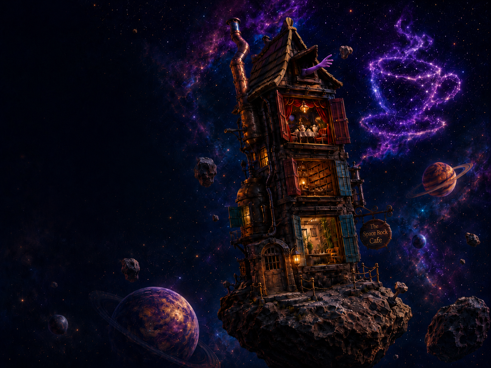
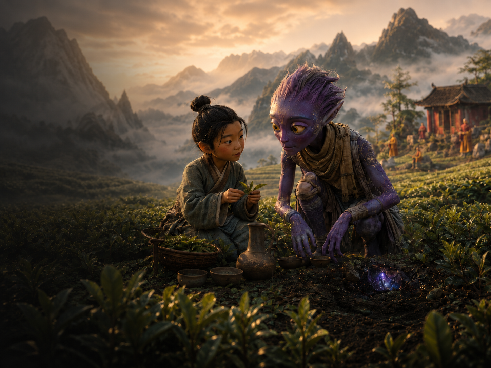
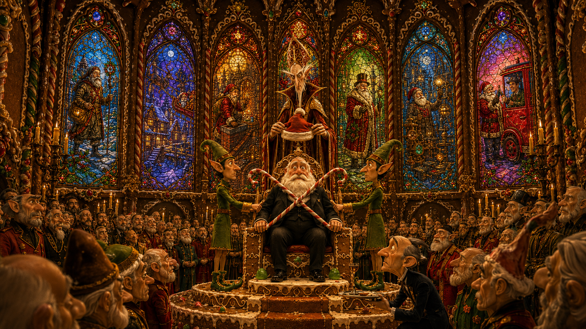
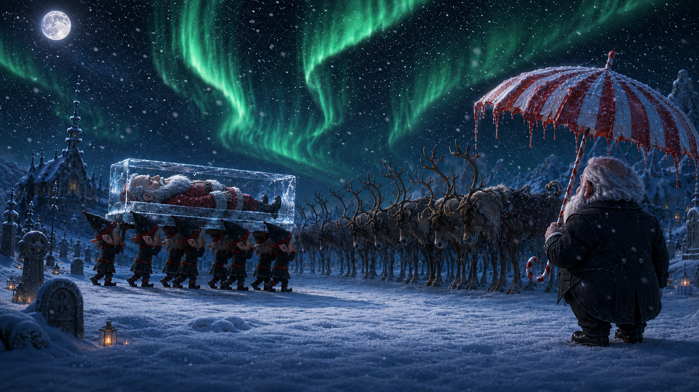
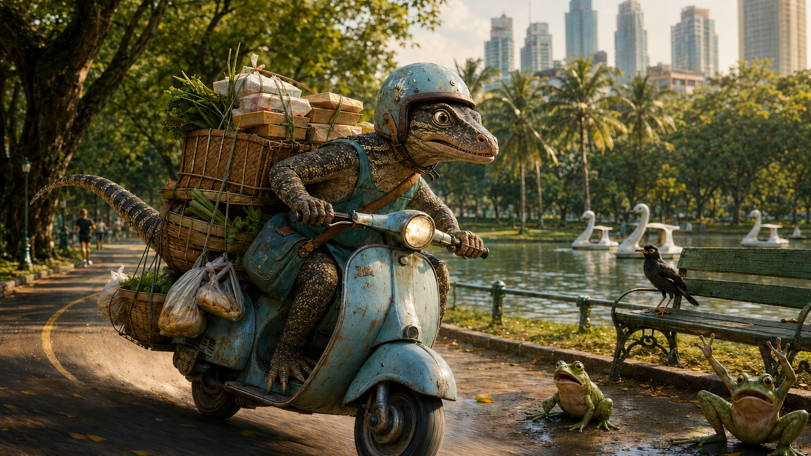
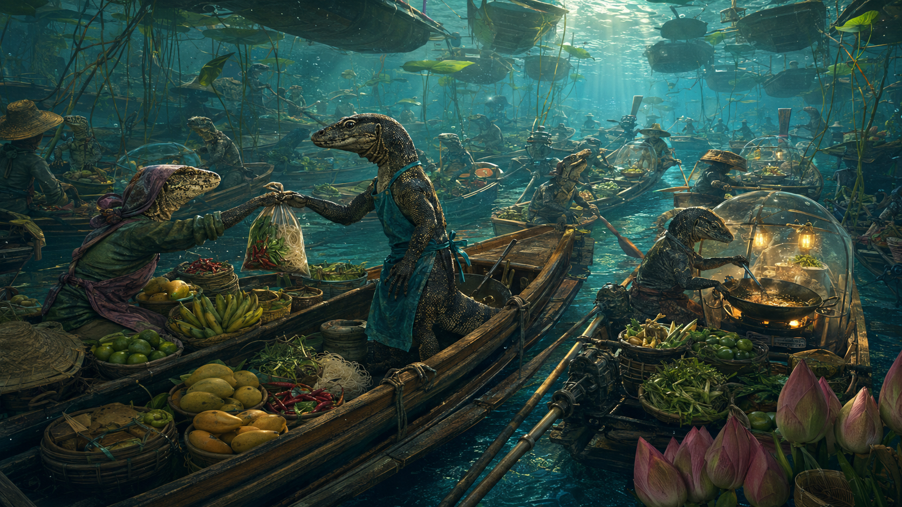
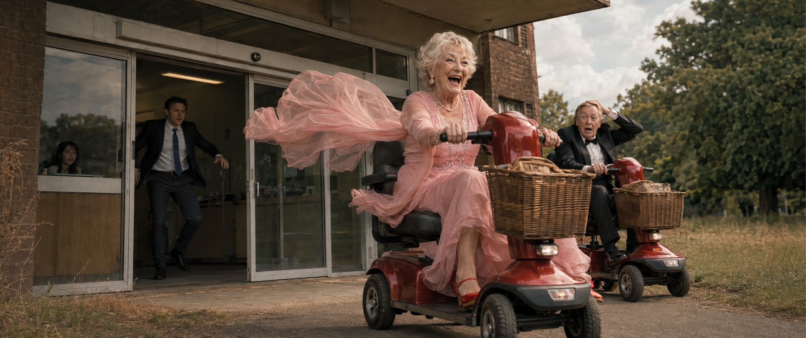
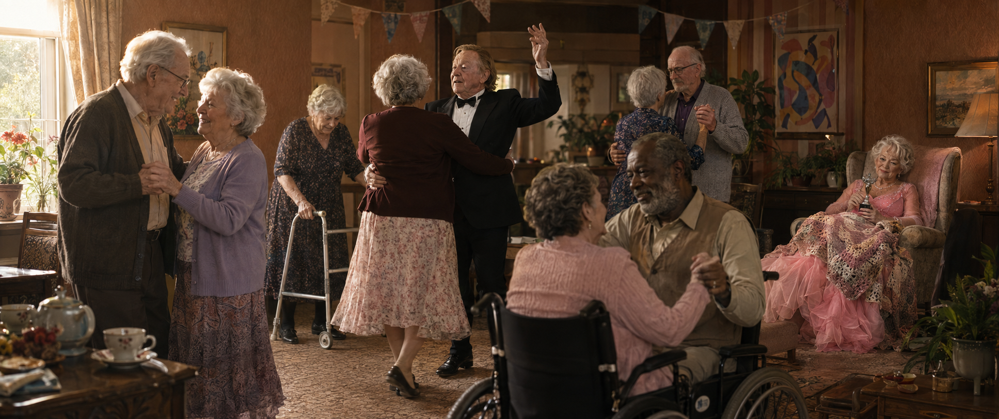
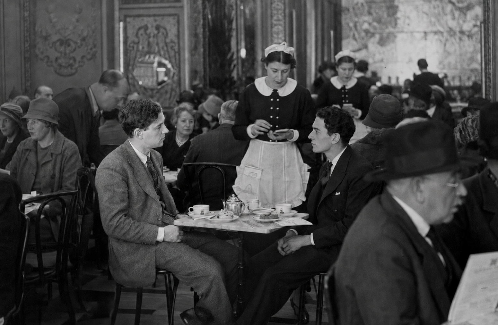
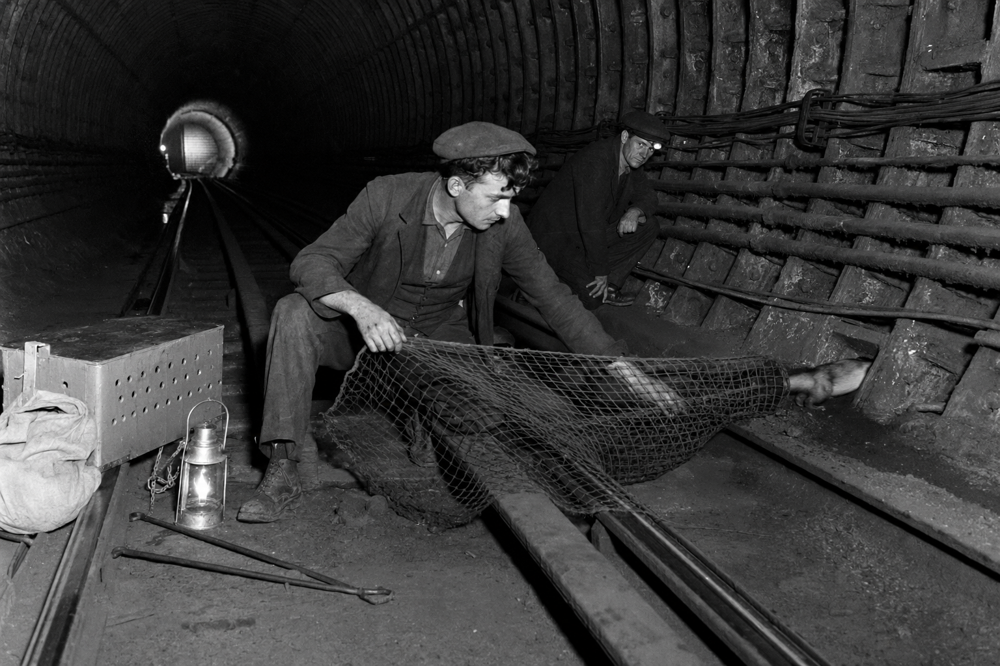

Screenwriter
Stories for anyone who’s ever felt out of place.
I write character-led stories about misfits, dreamers and people starting over — often through comedy, fantasy and heightened worlds. Beneath the strange premises are familiar questions about identity, belonging, loneliness, ageing and the courage to choose a life of your own.
Premises only. Scripts, treatments and further materials available privately on request.










About
Screenwriter working across animation and live action.
I love high-concept world-building and stories with a distinctly British sensibility — eccentric, absurd and occasionally dark — while always keeping character and emotional truth at the centre.
Alongside my writing, I have ten years of experience working in production across film, visual effects and animation, including roles at MPC, DNEG, Framestore, Mikros Animation and Skydance Animation, where I currently work. That experience has given me a practical understanding of how stories move from page to screen, as well as a deep appreciation for collaboration, visual storytelling and the realities of production.
My project Coming Second has also been recognised as a BlueCat Screenplay Competition quarterfinalist.
A lifelong film obsessive with a particular love of film history, I’m also a regular theatre-goer and reader. Those influences — from classic cinema to contemporary animation, theatre and literature — continually feed into the worlds and characters I create.
British and based in Madrid, I’m currently developing a slate of original film and television projects.
Contact
Scripts, treatments and additional materials are available on request.
matthowsam8@gmail.com